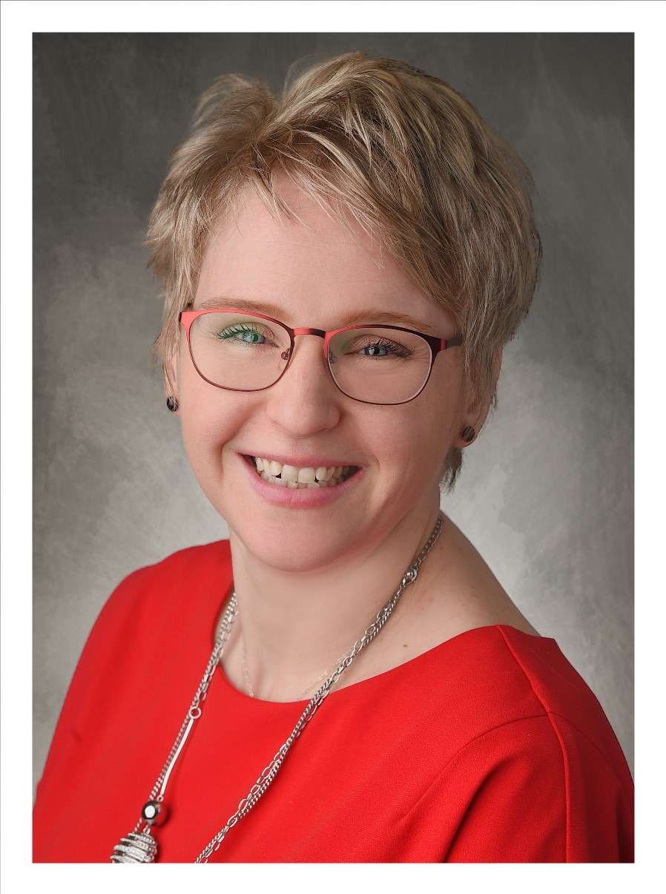

informatika szakmai tanár
Czirákiné Szép Katalin
informatika szakmai tanár
egy budapesti szakgimnáziumban
Lassan 16 éve vagyok a tanári pályán, tanítok halló és hallássérült tanulókat. Számomra, mindennap kihívás az informatika oktatással, mert állandóan változik a trendje és emellett diákkokal való kapcsolatát is.
Régen fociztam, már csak emlékeim, élményeim és barátaim maradtak meg, különböző társadalmi munkákat tevénykedtem /Abiltiy Park, Siket Sport Klubja, SSC Emléktárral a jövőért, Közös Sors Egyesület/.
Boldog házasságban élek, most egy gyerek van előttem, szeretek szervezkedni.
- #túrázás
- #biciklizés
- #utazás
- #olvasás
- #színezés
- #filmnézés